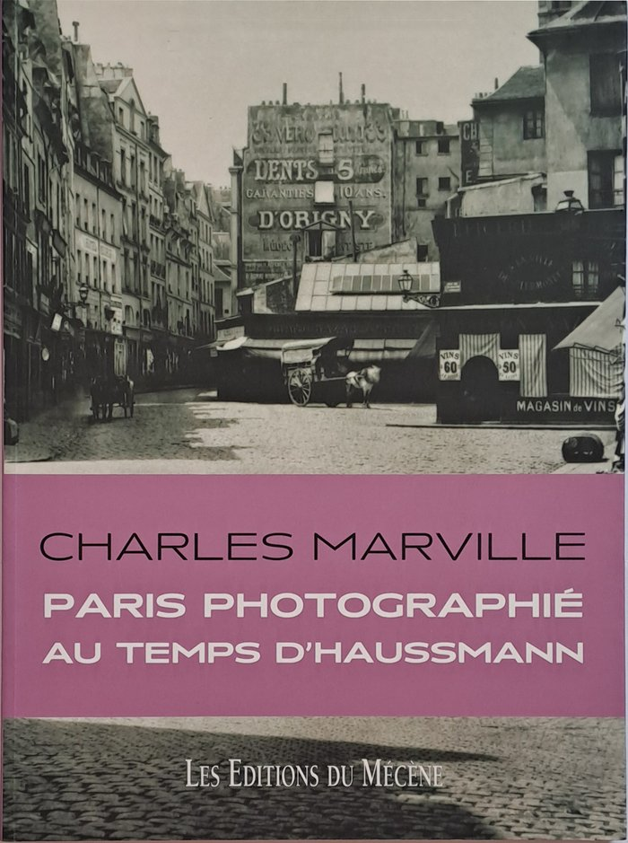
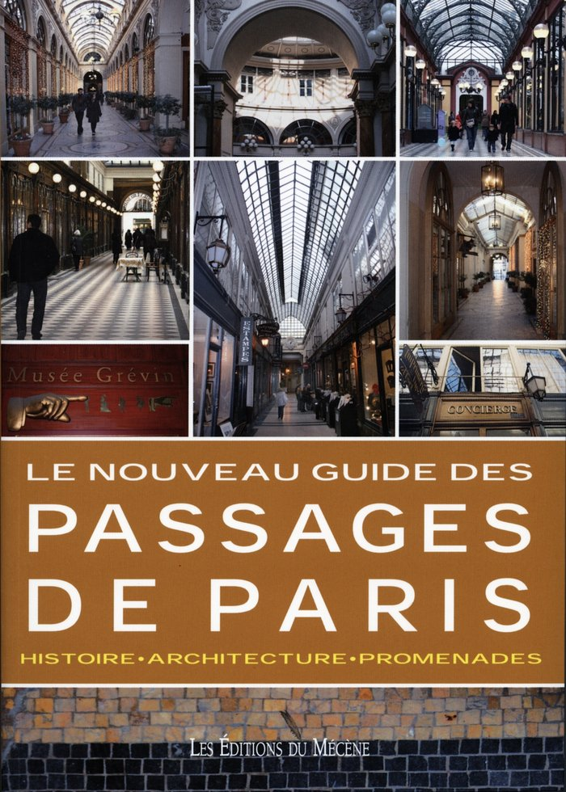
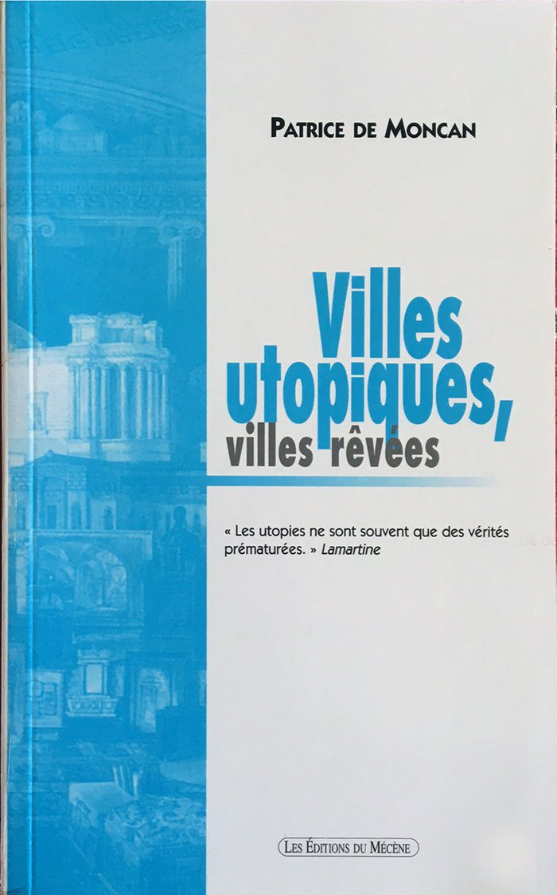
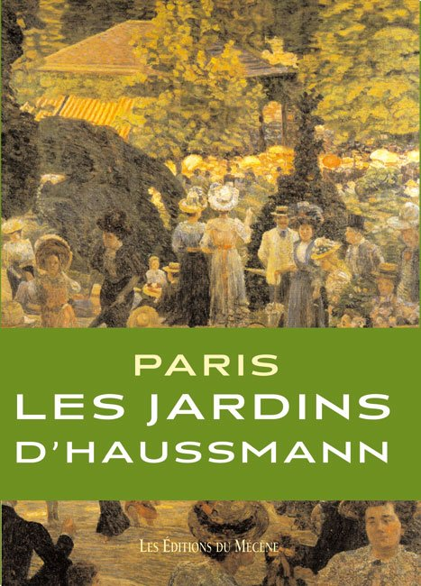
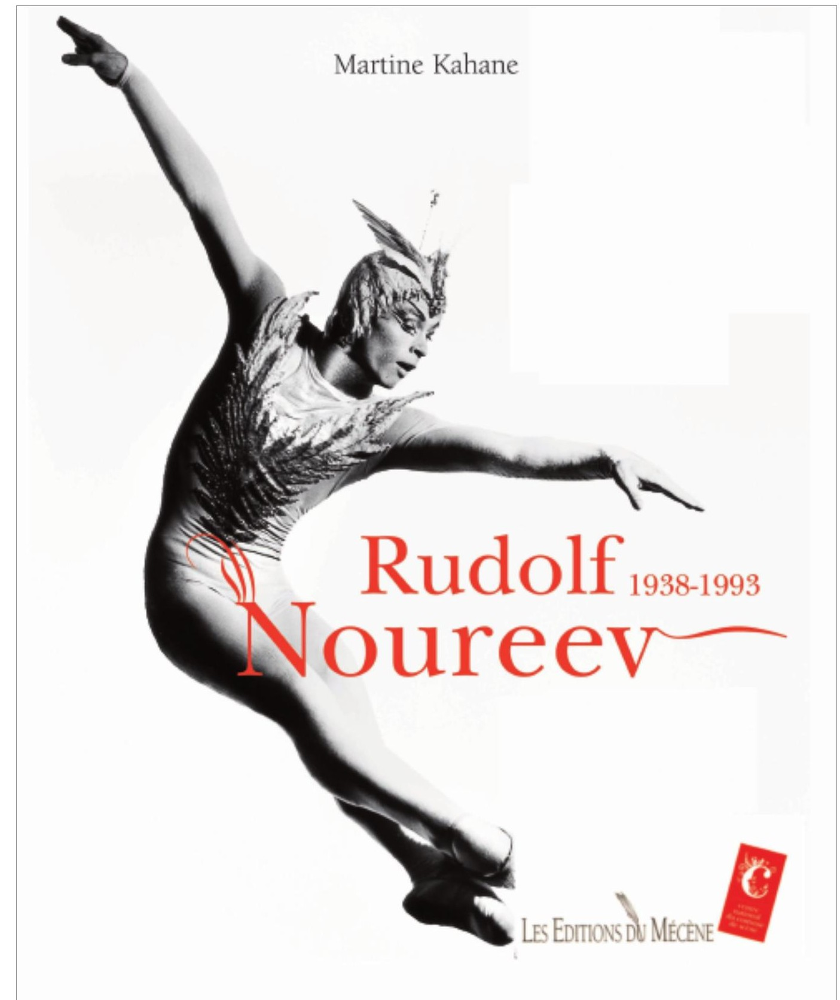
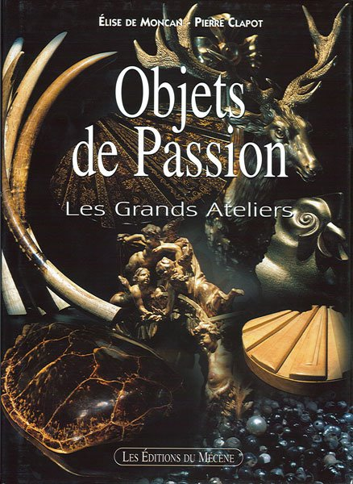
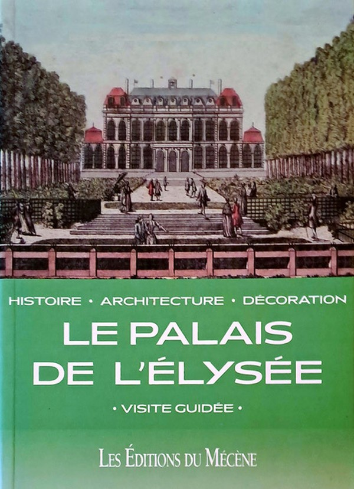
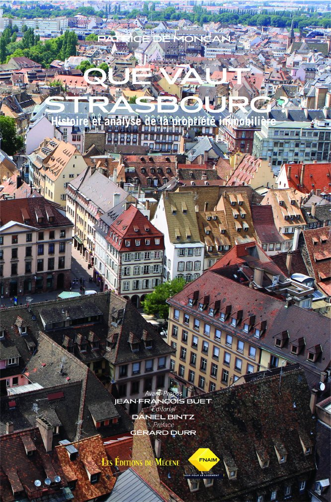

03 · Catalogue
Paris · ville · scène · patrimoine · art de vivre
Une bibliothèque de traces.
Tous nos ouvrages : un catalogue qui traverse l’histoire de Paris, l’architecture, les institutions, la scène et le patrimoine.

paris
Le Paris d’Haussmann
Ségécé

paris
Charles Marville
Paris photographié

paris
Les Passages de Paris
Patrimoine parisien

ville
Villes rêvées
Ségécé

paris
Les Jardins du baron Haussmann
Le Louvre des Antiquaires

paris
Paris en incendie
Coll. Paris d’Hier et d’Aujourd’hui

scene
Rudolf Noureev
CNCS · Centre national du costume de scène

scene
L’Opéra russe
Grand Prix du Livre d’Art

art
Objets de passion
Collection

patrimoine
Le Palais de l’Élysée
République française

ville
Que vaut Strasbourg ?
Économie urbaine

art
Histoire Amoureuse du Vin
Édition de prestige